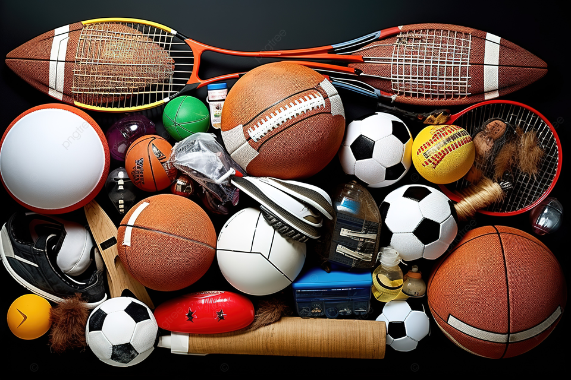

Resultados Alcançados
O Projeto Dumas já está em andamento e tem mostrado resultados significativos. Através da mobilização dos alunos e da comunidade escolar, conseguimos criar uma plataforma eficaz para a doação e reutilização de equipamentos esportivos. O projeto não só preenche lacunas no fornecimento de materiais, mas também incentiva a conscientização sobre consumo consciente e economia circular.
Considerações Finais
O Dumas se destacou como um modelo de projeto sustentável e inovador, promovendo valores como solidariedade e responsabilidade social. A continuidade e sucesso do projeto dependem do engajamento contínuo da comunidade e da adaptação às necessidades emergentes.
